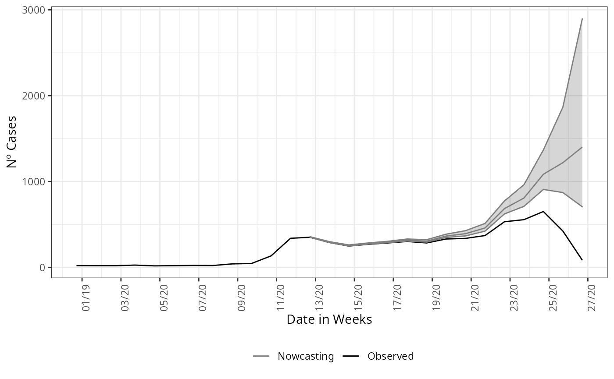
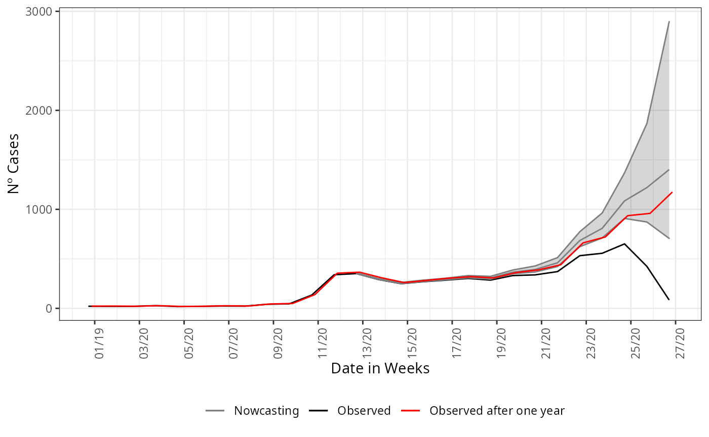

Nowcasting for decision making
Rafael Lopes & Leonardo Bastos
Source:vignettes/articles/nowcasting_importance.Rmd
nowcasting_importance.RmdNowcasting as a tool to support decision making
Nowcasting a rising curve or a curve on any other moment can give quantitative support for decision making, during the public health crises, the most needed is a way to anticipate, at least, what it is happening at the moment. Nowcasting is the tool for this type of questioning and can gives insights on the data to support needed decisions.
We start this section by cutting the original data at a moment of apparent decaying of the SARI hospitalisation, for the city of Belo Horizonte, which had a prompt starting response to the Covid=19 pandemic. The pressure on the health system took more time than the rest of the country, and the data at same time were showing a decay. We filter all cases entered until 4th of July of 2020 by the date of digitisation, a date that the cases shows up in the database.
library(tidyverse)
library(lubridate)
library(nowcaster)
## To see Nowcasting as if we were on the verge of rise in the curve
data("sragBH")
srag_now<-sragBH |>
filter(DT_DIGITA <= "2020-07-04")
data_by_week<-data.w_no_age(dataset = srag_now,
date_onset = DT_SIN_PRI,
date_report = DT_DIGITA) |>
group_by(date_onset) |>
tally()
data_by_week |>
ggplot(aes(x = date_onset,
y = n))+
geom_line()+
theme_bw()+
labs(x = 'Date of onset of symptons',
y = 'Nº Cases')+
scale_color_manual(values = c('grey50', 'black'),
name = '')+
scale_x_date(date_breaks = '2 weeks',
date_labels = '%V/%y',
name = 'Date in Weeks')
On this filtered data, we estimate the cases already that started its
date of onset of symptoms but were not yet reported, so there not in the
database. We just pass to the nowcasting_inla function, the
dataset filtered, flag for the columns where are the
date_onset and date_report, we add the flag
for the function return back the epidemic curve by epiweek.
nowcasting_bh_no_age <- nowcasting_inla(dataset = srag_now,
date_onset = DT_SIN_PRI,
date_report = DT_DIGITA,
data.by.week = T)
head(nowcasting_bh_no_age$data)
#> # A tibble: 6 × 3
#> date_report date_onset Delay
#> <date> <date> <dbl>
#> 1 2020-02-29 2020-02-08 3
#> 2 2020-02-01 2020-01-18 2
#> 3 2020-04-11 2020-03-28 2
#> 4 2020-03-28 2020-03-21 1
#> 5 2020-04-11 2020-03-14 4
#> 6 2020-04-18 2020-04-04 2Before we see the result of the nowcasting estimate we take a look on intermediate part of the process of nowcasting, the delay triangle, which sets the objects for nowcasting. The delay triangle is only a table where each unique amount of delay, (i.e. integer numbers of days or weeks) has passed between date of onset and date of report spread over each date of onset. The part that is closer to the present has less counts and has a lower amount of delay, this trivial due to, as the system takes time to process the cases, the most newer cases are lesser than the older ones, that already time to be processed.
From the data in weekly format we mount the counts of cases by the amount of delay. By tabling the delay amount against the data of onset of first symptoms, to see the pattern of the delay for the cases.
data_triangle <- nowcasting_bh_no_age$data |>
filter(Delay < 30) |>
arrange(desc(Delay))
delay_triangle<-table(data_triangle$date_onset,
rev(data_triangle$Delay),
dnn = list("Date of Onset", "Delay"))
delay_triangle
#> Delay
#> Date of Onset 0 1 2 3 4 5 6 7 8 9 10 11 12 13 14 15
#> 2019-12-28 5 13 1 1 0 0 0 1 0 0 0 0 0 0 0 0
#> 2020-01-04 3 15 1 0 0 1 0 0 0 0 0 0 0 0 0 0
#> 2020-01-11 1 13 4 1 0 0 0 0 0 0 1 0 0 0 0 0
#> 2020-01-18 5 17 3 0 0 0 0 0 0 0 1 0 0 0 1 0
#> 2020-01-25 5 7 5 1 0 0 0 0 0 0 0 0 0 0 0 0
#> 2020-02-01 3 12 3 1 0 0 0 0 0 0 0 1 0 0 0 0
#> 2020-02-08 7 11 4 0 0 1 0 0 0 0 0 0 0 0 0 0
#> 2020-02-15 7 12 2 1 0 0 0 0 0 0 0 0 0 0 0 0
#> 2020-02-22 10 24 4 1 0 1 0 0 1 0 0 0 0 0 0 0
#> 2020-02-29 15 26 2 0 1 0 1 0 1 0 0 0 0 0 0 0
#> 2020-03-07 39 81 7 3 1 1 0 1 1 0 0 0 0 0 0 0
#> 2020-03-14 90 188 34 12 6 4 1 0 1 1 1 0 0 0 0 0
#> 2020-03-21 88 128 75 28 16 9 3 1 0 1 2 0 0 0 0 0
#> 2020-03-28 59 124 57 19 6 2 3 8 4 4 3 0 0 1 0 0
#> 2020-04-04 36 88 59 33 13 6 2 2 2 5 0 0 2 0 0 1
#> 2020-04-11 30 131 42 24 14 5 9 3 3 2 1 1 3 0 0 1
#> 2020-04-18 30 118 68 29 11 12 6 2 5 2 1 1 0 0 0 0
#> 2020-04-25 28 107 83 30 21 12 2 8 4 0 3 1 1 2 0 0
#> 2020-05-02 15 114 70 29 7 11 8 12 5 4 4 2 2 1 1 0
#> 2020-05-09 22 108 84 36 25 20 9 6 8 4 7 1 1 0 0 0
#> 2020-05-16 18 122 92 35 26 14 8 10 8 1 2 1 0 1 0 0
#> 2020-05-23 0 166 88 36 26 15 13 8 6 4 3 2 0 1 1 0
#> 2020-05-30 0 302 132 30 17 17 7 9 7 2 2 2 2 1 1 1
#> 2020-06-06 0 271 161 59 27 17 5 7 3 3 0 1 2 0 0 0
#> 2020-06-13 0 223 239 78 41 26 16 10 5 5 4 1 1 2 0 0
#> 2020-06-20 0 0 190 91 48 35 19 21 5 7 3 3 0 0 2 0
#> 2020-06-27 0 0 0 0 0 3 30 14 14 6 2 3 4 2 2 0
#> Delay
#> Date of Onset 16 17 18 19 20
#> 2019-12-28 0 0 0 0 0
#> 2020-01-04 0 0 0 0 0
#> 2020-01-11 0 0 0 0 0
#> 2020-01-18 0 0 0 0 0
#> 2020-01-25 0 0 0 0 0
#> 2020-02-01 0 0 0 0 0
#> 2020-02-08 0 0 0 0 0
#> 2020-02-15 0 0 0 0 0
#> 2020-02-22 0 0 0 0 0
#> 2020-02-29 0 0 0 0 0
#> 2020-03-07 0 0 0 0 0
#> 2020-03-14 0 0 0 1 0
#> 2020-03-21 0 0 0 0 0
#> 2020-03-28 0 0 0 0 0
#> 2020-04-04 0 0 0 0 0
#> 2020-04-11 0 0 0 0 0
#> 2020-04-18 0 0 0 0 0
#> 2020-04-25 0 0 0 0 0
#> 2020-05-02 0 0 0 0 0
#> 2020-05-09 0 0 0 0 0
#> 2020-05-16 0 0 0 0 0
#> 2020-05-23 0 1 0 0 1
#> 2020-05-30 0 0 0 0 0
#> 2020-06-06 0 0 0 0 0
#> 2020-06-13 0 0 0 0 0
#> 2020-06-20 0 0 0 0 0
#> 2020-06-27 1 0 3 0 0We just look at the amount of cases with 30 weeks of delay or less,
it is the default maximum delay considered at nowcasting estimation. It
can be changed by the parameter Dmax.
If this element is grouped by and summarized by the onset of symptoms
date, here DT_SIN_PRI, it is the epidemiological curve
observed. To example it, we plot the estimate and the epidemiological
curve all together.
library(ggplot2)
dados_by_week <- nowcasting_bh_no_age$data %>%
group_by(date_onset) %>%
summarise(n = n())
nowcasting_bh_no_age$total |>
ggplot(aes(x = dt_event, y = Median,
col = 'Nowcasting')) +
geom_line(data = dados_by_week,
aes(date_onset, y = n,
col = 'Observed'))+
geom_ribbon(aes(ymin = LI, ymax = LS, col = NA),
alpha = 0.2,
show.legend = F)+
geom_line()+
theme_bw()+
theme(legend.position = "bottom",
axis.text.x = element_text(angle = 90)) +
scale_color_manual(values = c('grey50', 'black'),
name = '')+
scale_x_date(date_breaks = '2 weeks',
date_labels = '%V/%y',
name = 'Date in Weeks')+
labs(x = '',
y = 'Nº Cases')
And as expected, the nowcasting estimated a rising on curve when it were observed a decaying. Adding to the plot what actually has happened in that period, with the data inserted posteriorly the period for when the nowcasting estimated the rising in the curve for SARI hospitalizations.
nowcasting_bh_no_age$total %>%
ggplot(aes(x = dt_event, y = Median, col = 'Nowcasting')) +
geom_line(data = dados_by_week,
aes(date_onset, y = n, col = 'Observed'))+
geom_ribbon(aes(ymin = LI, ymax = LS, col = NA),
alpha = 0.2,
show.legend = F)+
geom_line()+
geom_line( data = sragBH %>%
filter(DT_SIN_PRI <= "2020-07-04") %>%
mutate(
D_SIN_PRI_2 = DT_SIN_PRI - as.numeric(format(DT_SIN_PRI, "%w"))
) %>%
group_by(D_SIN_PRI_2) %>%
tally(),
mapping = aes(x = D_SIN_PRI_2, y = n,
color = "Observed after one year")) +
theme_bw() +
theme(legend.position = "bottom",
axis.text.x = element_text(angle = 90)) +
scale_color_manual(values = c('grey50', 'black', 'red'),
name = '')+
scale_x_date(date_breaks = '2 weeks',
date_labels = '%V/%y',
name = 'Date in Weeks')+
labs(x = '',
y = 'Nº Cases')
This end the first simple example when estimating the already started events but not yet reported (i.e. nowcasting). The relevance of nowcasting for public health decision is given by the understanding that what is present on the databases are only a picture of the real time situation. The above graph can help policy makers on what decisions takes in the face of a rising curve of hospitalisations.